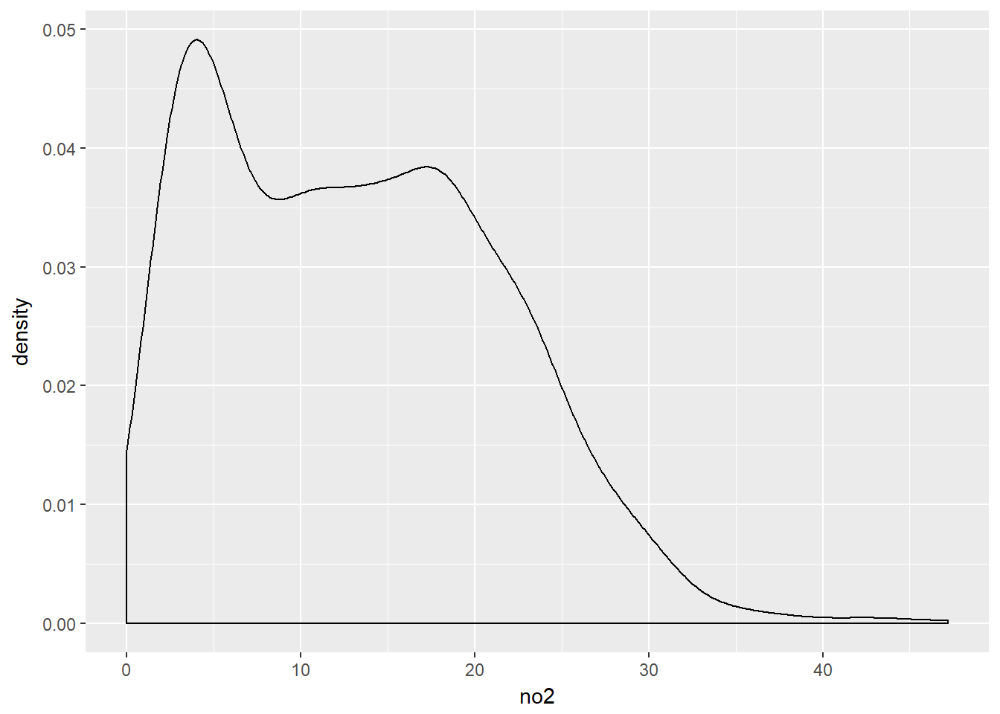
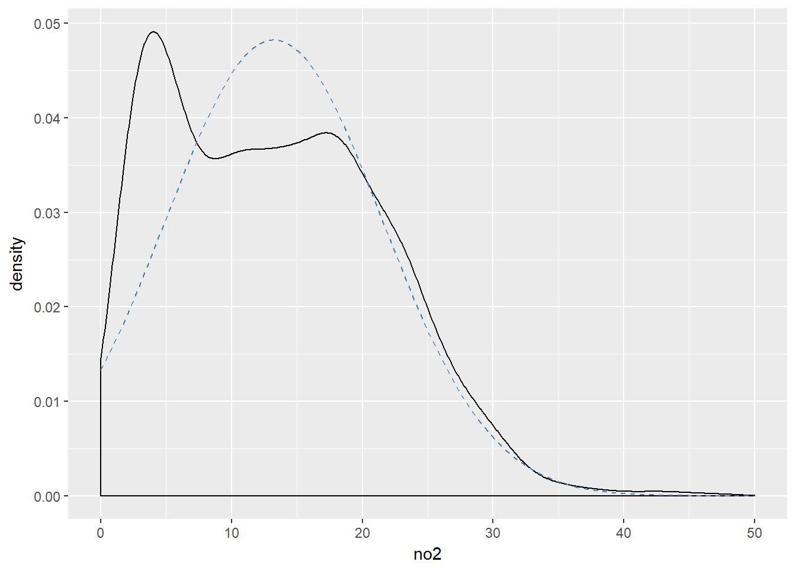
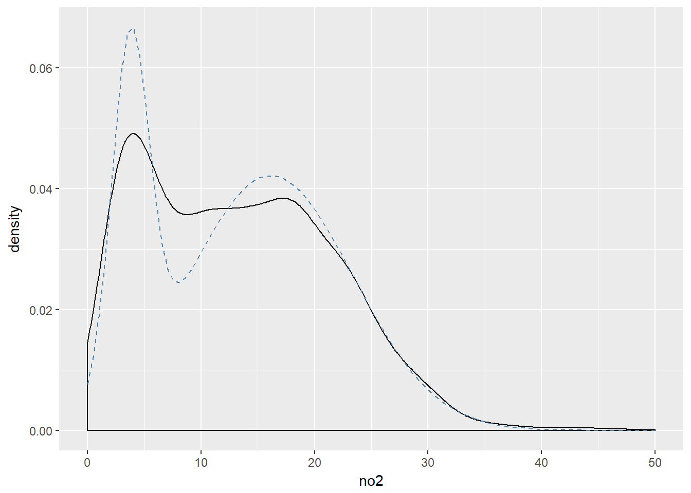

3.3 Quasi-Newton
Quasi-Newton methods arise from the desire to use something like Newton’s method for its speed but without having to compute the Hessian matrix each time. The idea is that if the Newton iteration is \[ \theta_{n+1} = \theta_n-f^{\prime\prime}(\theta_n)^{-1}f^\prime(\theta_n) \] is there some other matrix that we can use to replace either \(f^{\prime\prime}(\theta_n)\) or \(f^{\prime\prime}(\theta_n)^{-1}\)? That is can we use a revised iteration, \[ \theta_{n+1} = \theta_n-B_n^{-1}f^\prime(\theta_n) \] where \(B_n\) is simpler to compute but still allows the algorithm to converge quickly?
This is a challenging problem because \(f^{\prime\prime}(\theta_n)\) gives us a lot of information about the surface of \(f\) at \(\theta_n\) and throwing out this information results in, well, a severe loss of information.
The idea with Quasi-Newton is to find a solution \(B_n\) to the problem \[ f^\prime(\theta_n)-f^\prime(\theta_{n-1}) = B_n (\theta_n-\theta_{n-1}). \] The equation above is sometimes referred to as the secant equation. Note first that this requires us to store two values, \(\theta_n\) and \(\theta_{n-1}\). Also, in one dimension, the solution is trivial: we can simply divide the left-hand-side by \(\theta_n-\theta_{n-1}\). However, in more than one dimension, there exists an infinite number of solutions and we need some way to constrain the problem to arrive at a sensible answer.
The key to Quasi-Newton approaches in general is that while we initially may not have much information about \(f\), with each iteration we obtain just a little bit more. Specifically, we learn more about the Hessian matrix through successive differences in \(f^\prime\). Therefore, with each iteration we can incorporate this newly obtained information into our estimate of the Hessian matrix. The constraints placed on the matrix \(B_n\) is that it be symmetric and that it be close to \(B_{n-1}\). These constraints can be satisfied by updating \(B_n\) via the addition of rank one matrices.
If we let \(y_n = f^\prime(\theta_n)-f^\prime(\theta_{n-1})\) and \(s_n = \theta_n-\theta_{n-1}\), then the secant equation is \(y_n = B_ns_n\). One updating procedures for \(B_n\)
\[ B_{n} = B_{n-1} + \frac{y_ny_n^\prime}{y_n^\prime s_n} - \frac{B_{n-1}s_ns_n^\prime B_{n-1}^\prime}{s_n^\prime B_{n-1}s_n} \]
The above updating procedure was developed by Broyden, Fletcher, Goldfarb, and Shanno (BFGS). An analogous approach, which solves the following secant equation, \(H_n y_n = s_n\) was proposed by Davidon, Fletcher, and Powell (DFP).
Note that in the case of the BFGS method, we actually use \(B_n^{-1}\) in the Newton update. However, it is not necessary to solve for \(B_{n}\) and then invert it directly. We can directly update \(B_{n-1}^{-1}\) to produce \(B_{n}^{-1}\) via the Sherman-Morrison update formula. This formula allows us to generate the new inverse matrix by using the previous inverse and some matrix multiplication.
3.3.1 Quasi-Newton Methods in R
Quasi-Newton methods in R can be accessed through the optim() function, which is a general purpose optimization function. The optim() function implements a variety of methods but in this section we will focus on the "BFGS" and "L-BFGS-B"methods.
3.3.1.1 Example: Truncated Normal and Mixture of Normal Distributions
The data were obtained from the U.S. Environmental Protection Agency’s Air Quality System web page. For this example we will be using the daily average concentrations of nitrogen dioxide (NO2) for 2016 found in this file. In particular, we will focus on the data for monitors located in Washington State.
library(readr)
library(tidyr)
dat0 <- read_csv("daily_42602_2016.csv.bz2")
names(dat0) <- make.names(names(dat0))
dat <- filter(dat0, State.Name == "Washington") %>%
unite(site, State.Code, County.Code, Site.Num) %>%
rename(no2 = Arithmetic.Mean, date = Date.Local) %>%
select(site, date, no2)A kernel density estimate of the NO2 data shows the following distribution.
library(ggplot2)
ggplot(dat, aes(x = no2)) +
geom_density()
As an initial stab at characterizing the distribution of the NO2 values (and to demonstrate the use of optim() for fitting models), we will try to fit a truncated Normal model to the data. The truncated Normal can make sense for these kinds of data because they are strictly positive, making a standard Normal distribution inappropriate.
For the truncated normal, truncated from below at \(0\), the density of the data is
\[ f(x) = \frac{\frac{1}{\sigma}\varphi\left(\frac{x-\mu}{\sigma}\right)}{\int_0^\infty \frac{1}{\sigma}\varphi\left(\frac{x-\mu}{\sigma}\right)\,dx}. \]
The unknown parameters are \(\mu\) and \(\sigma\). Given the density, we can attempt to estimate \(\mu\) and \(\sigma\) by maximum likelihood. In this case, we will minimize the negative log-likelihood of the data.
We can use the deriv() function to compute the negative log-likelihood and its gradient automatically. Because we are using quasi-Newton methods here we do not need the Hessian matrix.
nll_one <- deriv(~ -log(dnorm((x - mu)/s) / s) + log(0.5),
c("mu", "s"),
function.arg = TRUE)The optim() function works a bit differently from nlm() in that instead of having the gradient as an attribute of the negative log-likelhood, the gradient needs to be a separate function.
First the negative log-likelihood.
nll <- function(p) {
v <- nll_one(p[1], p[2])
sum(v)
}Then the gradient function.
nll_grad <- function(p) {
v <- nll_one(p[1], p[2])
colSums(attr(v, "gradient"))
}Now we can pass the nll() and nll_grad() functions to optim() to obtain estimates of \(\mu\) and \(\sigma\). We will use starting values of \(\mu=1\) and \(\sigma=5\). To use the "BFGS" quasi-Newton method you need to specify it in the method argument. The default method for optim() is the Nelder-Mead simplex method. We also specify hessian = TRUE to tell optim() to numerically calculate the Hessian matrix at the optimum point.
x <- dat$no2
res <- optim(c(1, 5), nll, gr = nll_grad,
method = "BFGS", hessian = TRUE)Warning in log(.expr4): NaNs produced
Warning in log(.expr4): NaNs produced
Warning in log(.expr4): NaNs producedres$par
[1] 13.23731 8.26315
$value
[1] 4043.641
$counts
function gradient
35 19
$convergence
[1] 0
$message
NULL
$hessian
[,1] [,2]
[1,] 2.087005e+01 5.659674e-04
[2,] 5.659674e-04 4.174582e+01The optim() function returns a list with 5 elements (plus a Hessian matrix if hessian = TRUE is set). The first element that you should check is the onvergence code. If convergece is 0, that is good. Anything other than 0 could indicate a problem, the nature of which depends on the algorithm you are using (see the help page for optim() for more details). This time we also had optim() compute the Hessian (numerically) at the optimal point so that we could derive asymptotic standard errors if we wanted.
First note that there were a few messages printed to the console while the algorithm was running indicating that NaNs were produced by the target function. This is likely because the function was attempting to take the log of negative numbers. Because we used the "BFGS" algorithm, we were conducting an unconstrained optimization. Therefore, it’s possible that the algorithm’s search produced negative values for \(\sigma\), which don’t make sense in this context. In order to constrain the search, we can use the "L-BFGS-B" methods which is a “limited memory” BFGS algorithm with “box constraints”. This allows you to put a lower and upper bound on each parameter in the model.
Note that optim() allows your target function to produce NA or NaN values, and indeed from the output it seems that the algorithm eventually converged on the answer anyway. But since we know that the parameters in this model are constrained, we can go ahead and use the alternate approach.
Here we set the lower bound for all parameters to be 0 but allow the upper bound to be infinity (Inf), which is the default.
res <- optim(c(1, 5), nll, gr = nll_grad,
method = "L-BFGS-B", hessian = TRUE,
lower = 0)
res$par
[1] 13.237470 8.263546
$value
[1] 4043.641
$counts
function gradient
14 14
$convergence
[1] 0
$message
[1] "CONVERGENCE: REL_REDUCTION_OF_F <= FACTR*EPSMCH"
$hessian
[,1] [,2]
[1,] 20.868057205 -0.000250771
[2,] -0.000250771 41.735838073We can see now that the warning messages are gone, but the solution is identical to that produced by the original "BFGS" method.
The maximum likelihood estimate of \(\mu\) is 13.24 and the estimate of \(\sigma\) is 8.26. If we wanted to obtain asymptotic standard errors for these parameters, we could look at the Hessian matrix.
solve(res$hessian) %>%
diag %>%
sqrt[1] 0.2189067 0.1547909In this case though, we don’t care much for the standard errors so we will move on.
We can plot the original density smooth of the data versus the fitted truncated Normal model to see how well we charaterize the distribution. First we will evaluate the fitted model at 100 points between 0 and 50.
xpts <- seq(0, 50, len = 100)
dens <- data.frame(xpts = xpts,
ypts = dnorm(xpts, res$par[1], res$par[2]))Then we can overlay the fitted model on top of the density using geom_line().
ggplot(dat, aes(x = no2)) +
geom_density() +
geom_line(aes(x = xpts, y = ypts), data = dens, col = "steelblue",
lty = 2)
It’s not a great fit. Looking at the density smooth of the data, it’s clear that there are two modes to the data, suggesting that a truncated Normal might not be sufficient to characterize the data.
One alternative in this case would be a mixture of two Normals, which might capture the two modes. For a two-component mixture, the density for the data would be
\[ f(x) = \lambda\frac{1}{\sigma}\varphi\left(\frac{x-\mu_1}{\sigma_1}\right) + (1-\lambda)\frac{1}{\sigma}\varphi\left(\frac{x-\mu_2}{\sigma_2}\right). \]
Commonly, we see that this model is fit using more complex algorithms like the EM algorithm or Markov chain Monte Carlo methods. While those methods do provide greater stability in the estimation process (as we will see later), we can in fact use Newton-type methods to maximize the likelihood directly with a little care.
First we can write out the negative log-likelihood symbolically and allow R’s deriv() function to compute the gradient function.
nll_one <- deriv(~ -log(lambda * dnorm((x-mu1)/s1)/s1 + (1-lambda)*dnorm((x-mu2)/s2)/s2),
c("mu1", "mu2", "s1", "s2", "lambda"),
function.arg = TRUE)Then, as before, we can specify separate negative log-likelihood (nll) and gradient R functions (nll_grad).
nll <- function(p) {
p <- as.list(p)
v <- do.call("nll_one", p)
sum(v)
}
nll_grad <- function(p) {
v <- do.call("nll_one", as.list(p))
colSums(attr(v, "gradient"))
}Finally, we can pass those functions into optim() with an initial vector of parameters. Here, we are careful to specify
We are using the
"L-BFGS-B"method so that we specify a lower bound of 0 for all parameters and an upper bound of 1 for the \(\lambda\) parameterWe set the
parscaleoption in the list of control parameters, which is similar to thetypsizeargument tonlm(). The goal here is to giveoptim()a scaling for each parameter around the optimal point.
x <- dat$no2
pstart <- c(5, 10, 2, 3, 0.5)
res <- optim(pstart, nll, gr = nll_grad, method = "L-BFGS-B",
control = list(parscale = c(2, 2, 1, 1, 0.1)),
lower = 0, upper = c(Inf, Inf, Inf, Inf, 1))The algorithm appears to run without any warnings or messages. We can take a look at the output.
res$par
[1] 3.7606598 16.1469811 1.6419640 7.2378153 0.2348927
$value
[1] 4879.924
$counts
function gradient
17 17
$convergence
[1] 0
$message
[1] "CONVERGENCE: REL_REDUCTION_OF_F <= FACTR*EPSMCH"The convergence code of 0 is a good sign and the parameter estimates in the par vector all seem reasonable. We can overlay the fitted model on to the density smooth to see how the model does.
xpts <- seq(0, 50, len = 100)
dens <- with(res, {
data.frame(xpts = xpts,
ypts = par[5]*dnorm(xpts, par[1], par[3]) + (1-par[5])*dnorm(xpts, par[2], par[4]))
})
ggplot(dat, aes(x = no2)) +
geom_density() +
geom_line(aes(x = xpts, y = ypts), data = dens, col = "steelblue",
lty = 2)
The fit is still not wonderful, but at least this model captures roughly the locations of the two modes in the density. Also, it would seem that the model captures the tail of the density reasonably well, although this would need to be checked more carefully by looking at the quantiles.
Finally, as with most models and optimization schemes, it’s usually a good idea to vary the starting points to see if our current estimate is a local mode.
pstart <- c(1, 20, 5, 2, 0.1)
res <- optim(pstart, nll, gr = nll_grad, method = "L-BFGS-B",
control = list(parscale = c(2, 2, 1, 1, 0.1)),
lower = 0, upper = c(Inf, Inf, Inf, Inf, 1))
res$par
[1] 3.760571 16.146834 1.641961 7.237776 0.234892
$value
[1] 4879.924
$counts
function gradient
22 22
$convergence
[1] 0
$message
[1] "CONVERGENCE: REL_REDUCTION_OF_F <= FACTR*EPSMCH"Here we see that with a slightly different starting point we get the same values and same minimum negative log-likelihood.